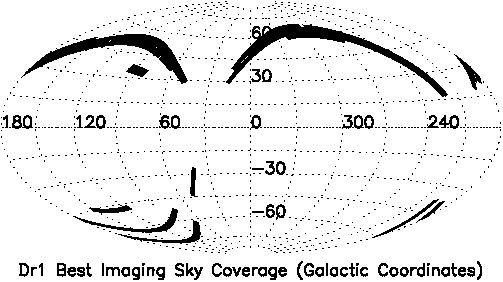
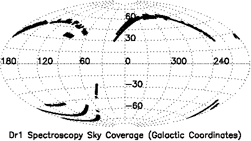

The DR1 contains that part of the SDSS imaging and spectroscopy taken before such and such a date satisfying the survey quality requirements do we have a link to those?. Here we give coverage plots and the detailed coverage tables from which they were constructed. The survey terms are explained in the sections on imaging coverage and spectroscopic coverage below.
Also check the SDSS finding chart for survey coverage.| Equatorial Imaging (shaded) and spectroscopy (circled) |
|||
| Complete (ps) | North only (ps) | South only (ps) | |
| Galactic |  |  | |
| Best (ps) | Targetted (ps) | Spectroscopy (ps) |
| Best | Target | Spectroscopy |
|---|---|---|
| par file | par file | par file |
Since the imaging survey scans along great circles on the sky, the survey coverage is defined in great circle coordinates. Great circles are labelled by an integer stripe number n such that the inclination of a stripe with respect to the celestial equator is -25° + 2.5° × n. The coordinate along a stripe is called mu. The DR1 coverage is therefore defined in terms of stripe number and mu.
An imaging run designates a continuous scan of the imaging telescope along a stripe. Since the camera's focal plane is not completely filled with CCDs (see the instrument descriptions), at least two runs are required to completely cover one stripe. A single run's contribution is called a strip. The imaging data reduction is done on a run-by-run basis, hence the data in our Data Archive are accessible by run number. A run is divided into images 2048 pix × 1489 pix which are called fields. Object detection, photometry and classification is done field by field.
Every time we (re)process our imaging data, we assign the outputs a new rerun number. Across runs, this is an arbitrary index, so the same rerun of different runs does not have to be produced with the same software or calibrations.
We publish two reruns for each run contained in DR1:skyVersion = 0.skyVersion = 1.startmu
<= mu <= endmu). These were used
to create the plots above.{kind=link}
{kind=link}
{kind=link}
{kind=link}
{kind=link}
{kind=link}